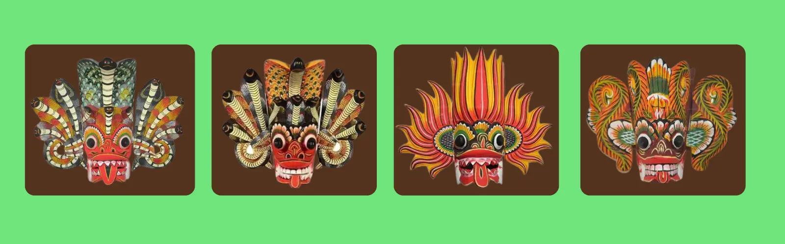
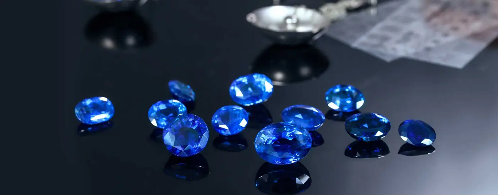

Sri Lanka is the perfect destination to shop quality, usually handmade, gifts for all tastes. Needless to say that the commonest things to buy in Sri Lanka are all things elephants. Elephant fridge magnets, wooden elephants, elephants on T-shirts, tote bags and mugs. Elephants are everywhere and we did buy way too many of them in various forms.
Sri Lanka has a long tradition in the craft of mask making. The coastal town of Ambalangoda in the country’s South is famous for its wooden mask industry. That said, you can find handmade masks literally everywhere else in the country as well. These hand-carved and hand-painted colourful masks are related to Sri Lankan ancient rituals and devil dances. There are different types of masks, each one serving a different purpose.
Sri Lanka has been famous for its high-quality spices throughout its entire history. In fact, it’s the spices that made Sri Lanka an essential stop on every trade route of the past. The list of spices you can buy in Sri Lanka is endless so, if you have time, you could visit one of many Spice Gardens throughout the country so as to see the actual plants and learn more about herbs and spices as well as their health benefits.
.webp)
Throughout its history, Sri Lanka has been known as The Gem Island. The country is indeed famous all over the world for the variety and high quality of gemstones it produces. Jewellery made of native gemstones comes at very reasonable prices in Sri Lanka. If you’re wondering where to buy gems in Sri Lanka, make sure you choose a reliable retailer.
